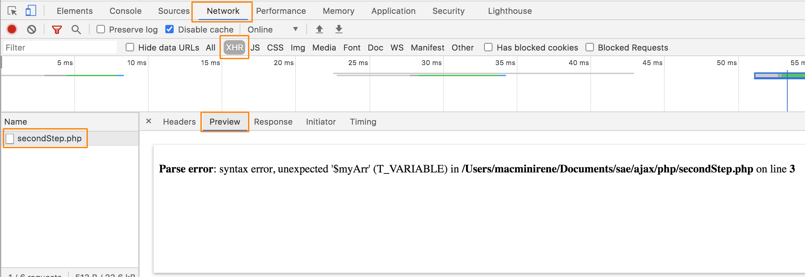

Beim Entwickeln von Ajax-Projekten stellt sich eine Schwierigkeit: Da man ein PHP-Script "im Hintergrund" aufruft, kann man die PHP-Fehlermeldungen nicht direkt sehen. Der direkte Aufruf nützt meistens auch nicht viel, weil das PHP-Script ja in der Regel mit einem Input von JavaScript arbeitet. Hier hilft jedoch die Entwickler-Konsole von Chrome weiter:
